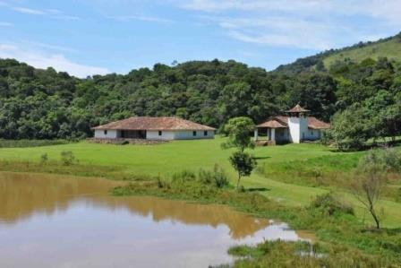
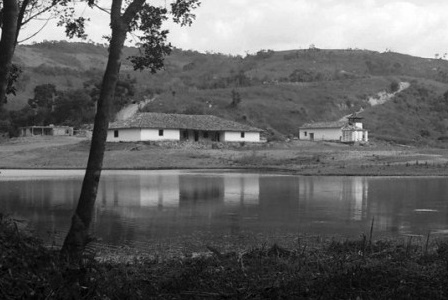
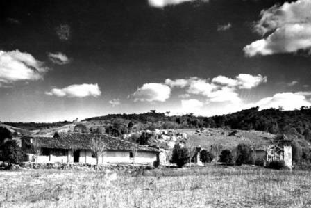

Sitío Santo Antônio
{kind=link}
O valor histórico da Casa Grande e Capela de Santo Antônio pode ser atribuído a vários fatores. Desde a data de construção, em 1681, até a importância de seus ilustres proprietários: Fernão Paes de Barros, Barão de Piratininga e o escritor modernista Mário de Andrade, este último adquiriu e doou os imóveis ao Serviço de Patrimônio Histórico e Artístico Nacional, em 1947. Ao doar o imóvel, o escritor fez uma exigência: ser o zelador deste patrimônio enquanto estivesse vivo. Sua intenção era tornar a Casa Grande um local de repouso para os artistas brasileiros.
A riqueza arquitetônica da Casa Grande e Capela de Santo Antônio já foi objeto de estudo e teses acadêmicas. O arquiteto Lucio Costa foi um dos primeiros profissionais renomados a identificar as manifestações de arte genuinamente brasileira que o local apresenta. Quando descoberta em 1937, quase metade do prédio da Casa Grande já havia ruído, mas ainda houve condições para os técnicos e historiadores constatarem os padrões tradicionais característicos dos três primeiros séculos de ocupação do planalto paulista: paredes de taipa de pilão; armadura da cobertura formada por cumeeira, espigões e frechais apoiados ao longo das paredes, caibros que se prolongavam para fora do edifício sustentando largos beirais; poucas e pequenas portas e janelas feitas em canela e ainda calçadas de pedras irregulares e chão batido.
A restauração da Capela e Casa Grande foi feita realizada durante quase toda a década de 40. Em 1965 o interior da Capela sofreu uma nova intervenção para a reconstituição dos tabuados do altar-mor. No início dos anos 90 foi necessário um novo estudo para a conservação dos elementos decorativos da capela que vinham sendo deteriorados pela ação dos raios ultravioleta. O conjunto arquitetônico formado pela Casa Grande e Capela de Santo Antônio estão inseridos numa paisagem concebida para valorizá-lo. A grama, a água e a mata ao redor das duas construções tornam a visita ao local muito mais agradável.
 {kind=link}
{kind=link}